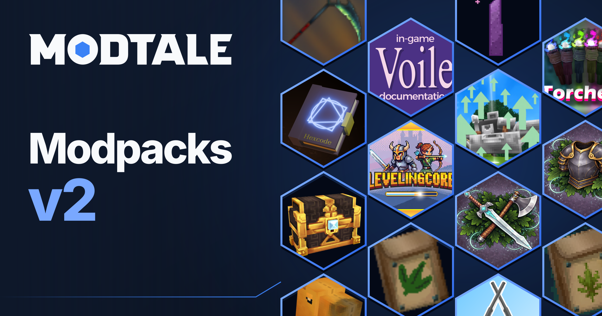
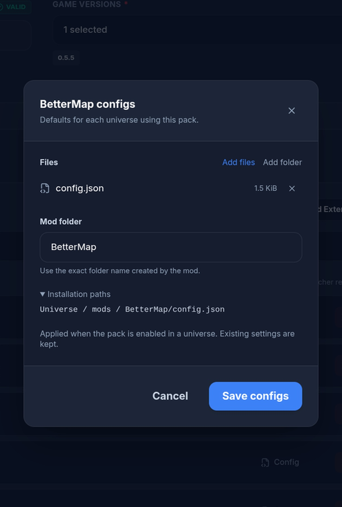
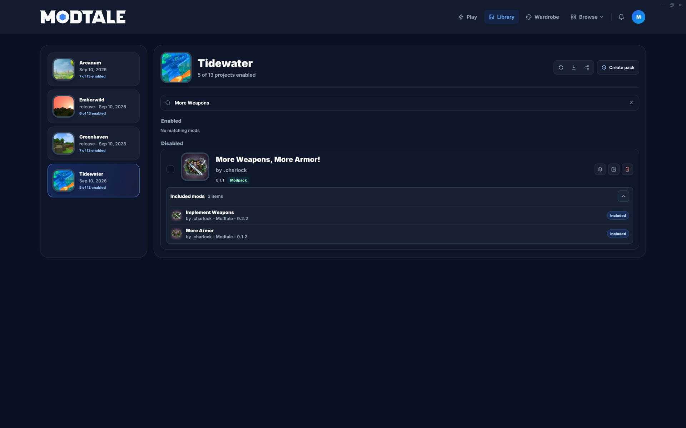

Modpacks v2: from your world to theirs
Build and share Hytale modpacks with chosen versions, per-mod configs, and projects from Modtale and CurseForge.
 Modtale Team7 min read
Modtale Team7 min read
You’ve found the right mods, tested the combination, and tuned the settings. Now you want someone else to experience the world you’ve put together. Getting them there should be the easy part.
Modpacks v2 rebuilds that process around the choices you make. Assemble a release on the Modtale website, pick the versions it includes, and attach config defaults to the mods they belong to. Bring in projects from other sources, including CurseForge. And when a setup starts as something you’re playing with friends, a shared mod list can become the beginning of a published pack.
Build the pack, right on Modtale
A new modpack starts in the website’s release editor. Search for the projects you want, choose the releases you’ve tested, and build your lineup. Modtale assembles the pack from those choices, so you don’t have to gather every mod into an archive yourself.
Version choices include game-version compatibility, with alpha and beta releases available when you need them. If a mod needs supporting projects, the editor can prompt you to add those too. You can review the combination before it becomes someone else’s installation.
Everything you include belongs to the pack. Its mods install together, as one complete setup. Each entry keeps its selected version, so a new release from a mod author doesn’t silently change the combination you chose.
Add your release details and changelog, review the contents, and publish when you’re ready. Your project gives players a place to discover the pack, read about it, and find its releases.
Give each mod the settings you intended
The difference between a pile of mods and a pack can be a handful of carefully chosen settings. Slower progression. A different balance. Defaults that make several projects feel at home together.
In the website editor, open Configs beside an included mod. Add individual config files or a folder, preview supported text files, and save the defaults with that entry. Each mod has its own attachments, so you can see which settings belong to which part of your pack.
For Modtale projects, the editor tries to read the mod’s manifest and suggest its folder name. You can correct that name when needed, and expand Installation paths to check where the files will go. There’s no need to construct an entire overrides archive just to include a config file.

These files travel with the release and are applied when the pack is enabled in a universe. Existing settings are kept. Your defaults establish the starting experience without replacing the choices someone has already made.
Your lineup can reach beyond Modtale
A pack’s best combination might span more than one catalog. The editor now lets you add external references alongside Modtale projects, including CurseForge files and GitHub releases.
For a CurseForge mod, paste its specific file-page link in the external-project picker. Review the resolved project and file, then add it to the pack. Its source stays visible in the contents list, and you can attach its config defaults through the same per-mod controls.
Packs containing CurseForge mods require Modtale Launcher. The website makes that requirement clear, and the launcher downloads those mods directly from CurseForge to the player’s device. They aren’t bundled into a redistributable website ZIP.
That means you can describe the complete setup in one project, with specific files from each source, while players have a single place to start installing it.
A release you can come back to
Each pack release records the combination you assembled: the projects, their versions, their sources, and the config files you supplied. When you change the lineup, make those choices in the next release and explain them in its changelog.
Modtale generates a lockfile with the pack’s contents. Bundled files and overrides have paths, sizes, and checksums; external entries retain their source references. The launcher checks locked files before installing them. You don’t have to write that record by hand—it follows from the release you build in the editor.
From a release to a world
The launcher brings the finished pack into your library, installs its included mods together, and lets you choose the worlds that use it. Expand a pack to inspect its contents and versions. When you want to take the setup in your own direction, Unlock modpack turns those contents into individually managed mods.

For a closer look at browsing, downloading, and managing mods on desktop, read the launcher announcement.
Make it yours. Make it shareable.
Start with a few favorite mods or a setup you’ve already spent hours playing. Give it the versions and settings that make it work. Modpacks v2 gives that work a home on Modtale—and a way into someone else’s world.
Explore the modpack catalog, build a pack in the project editor, or turn a shared list into your first draft. We’d love to see what you create on Discord.
See you in the worlds you make.
— The Modtale team